01View case study ↗
Network.I
Leading an AI-powered startup from market opportunity and product strategy through team building, MVP development and business strategy.
AI networkingMVP developmentGTM strategy
MARKETING • TECHNOLOGY • DATA
First-Class Honours Marketing student at Middlesex University Dubai, CEO & Co-founder of Network.I, and a multidisciplinary marketer working across strategy, digital marketing, data and technology, with a focus on entrepreneurship, innovation and building technology-driven ventures.
Hi, I'm Sofia :)
A First-Class Honours Marketing student at Middlesex University Dubai and CEO of Network.I, an AI-powered SaaS startup.
My experience combines digital marketing, customer experience, hospitality, real estate, entrepreneurship and technology, giving me a multidisciplinary perspective on how businesses understand people, build products and create value.
Leading an AI-powered startup from market opportunity and product strategy through team building, MVP development and business strategy.
Planning digital marketing activities, optimizing website content, analysing performance data and improving local visibility.
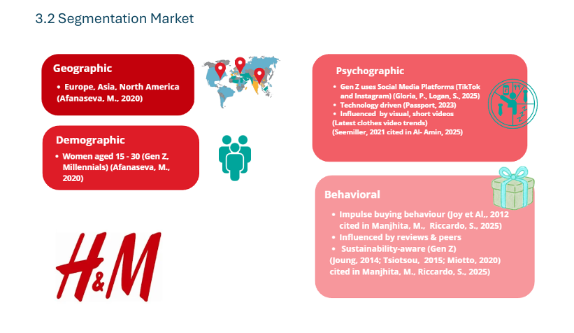
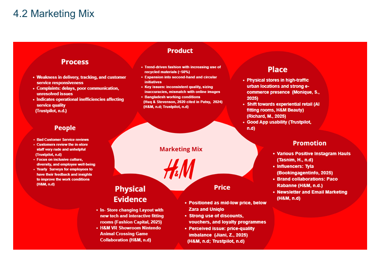
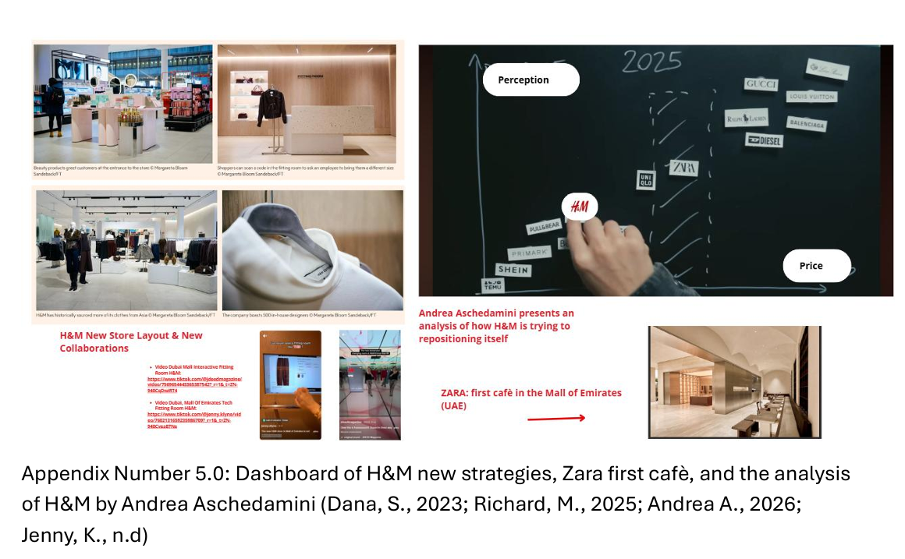
Customer journey mapping, positioning analysis and identification of opportunities to improve the overall customer experience.
 04
View case study ↗
04
View case study ↗
Survey analysis using Excel pivot tables and statistical analysis to translate consumer behaviour into actionable marketing insights.

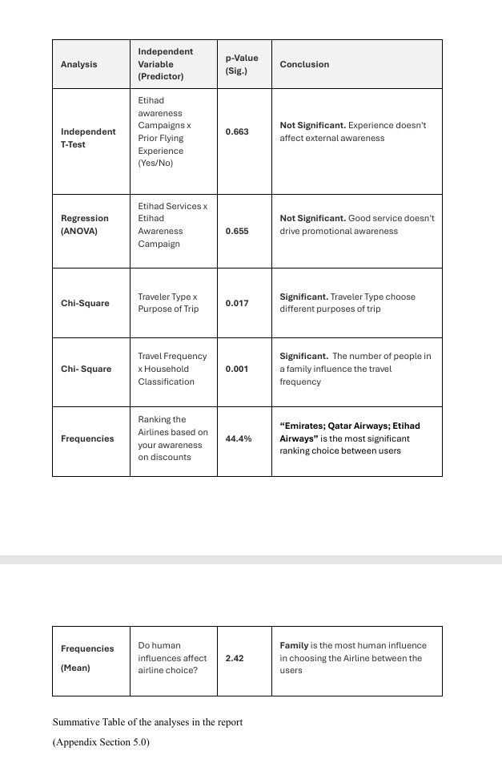
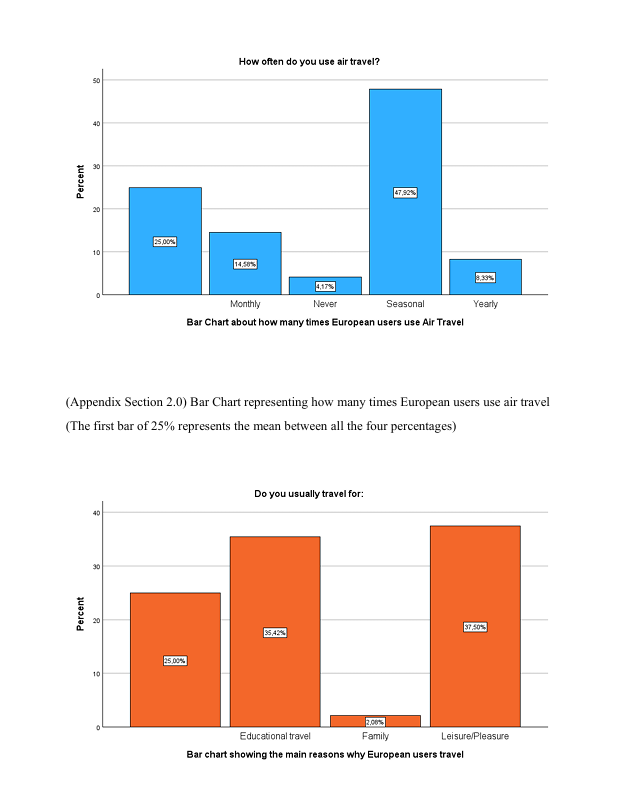
Quantitative analysis of European consumers using SPSS to evaluate promotional awareness, service perceptions, travel behaviour and loyalty opportunities.
A selection of marketing execution across technology communities and student organisations — from campaign concepts and event coverage to short-form video and social content.
As Project Manager and Marketing Lead, I contribute to event promotion, community engagement and project execution within a technology-focused student community.
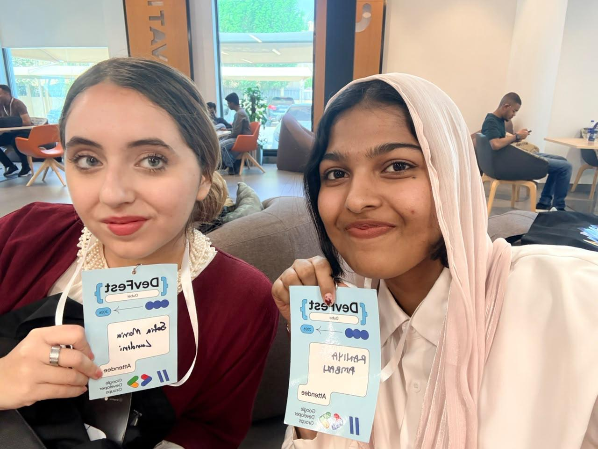
GDG MDX • CAMPUS ACTIVATIONThis video is the Week of Welcome wrap-up post for GDG MDX, highlighting the event, community and moments from the activation.
This video is the GDG MDX Meet the Team post, introducing the team and helping the community get to know the people behind GDG MDX.
Communication strategy, content and campaigns designed to strengthen visibility, student engagement and promotion of events and opportunities.
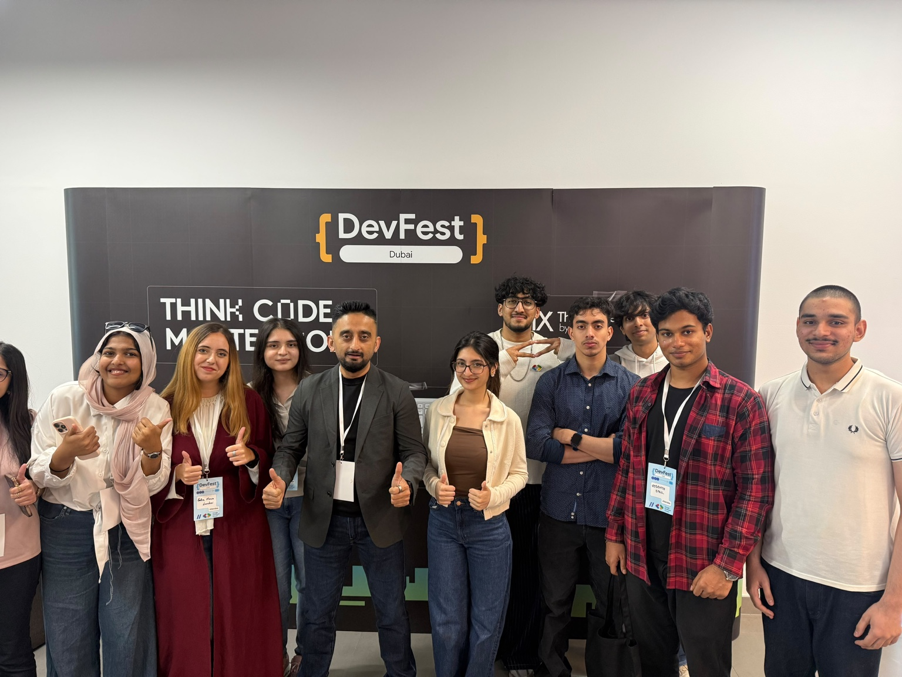
Leading marketing and project initiatives within a technology-focused student community, coordinating events, content and execution while supporting team decision-making.
Dividing tasks, coordinating events and supporting final team decisions.
Coordinating reels, communication, concepts and the community's visual identity.
Reached 120+ joined students through community initiatives and outreach.
Generated 17K total views across GDG MDX content.

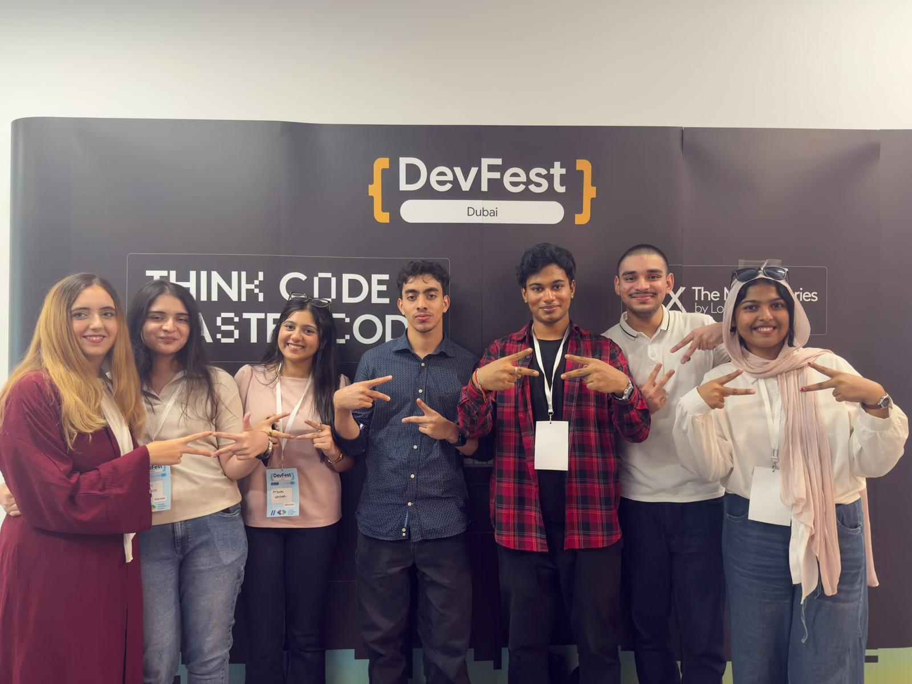
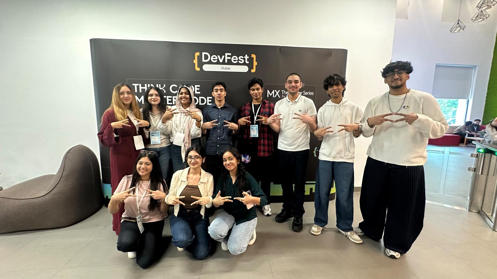
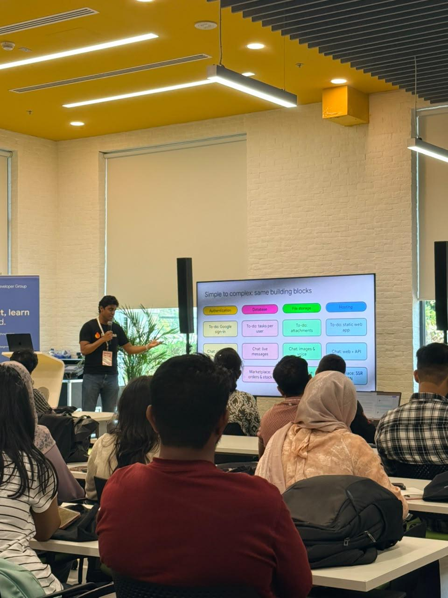
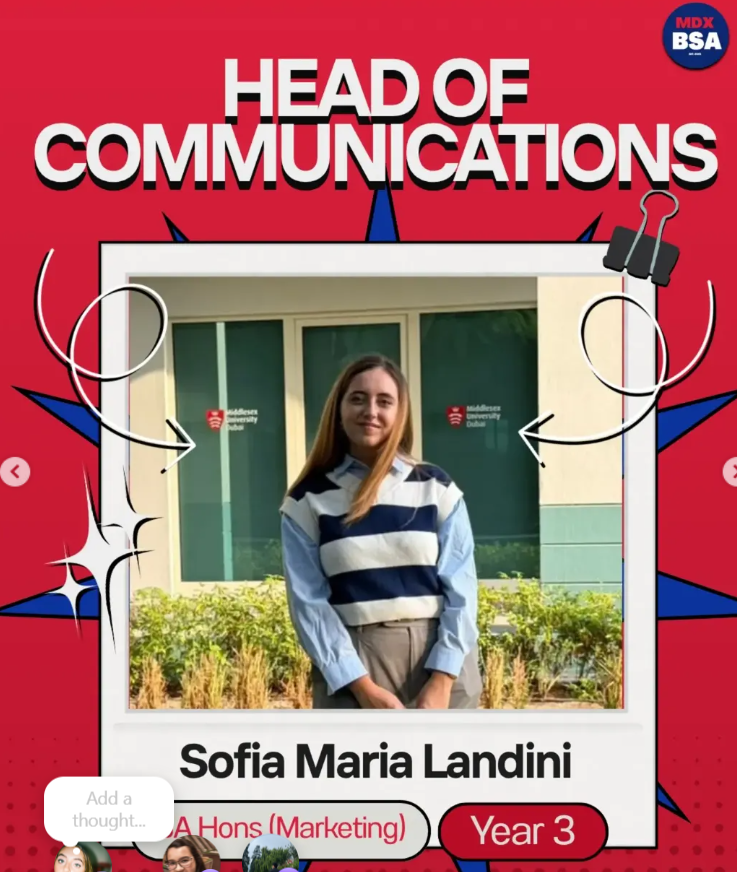
Leading communication strategy, content and campaigns to strengthen visibility, student engagement and promotion of events and opportunities.
Communication strategy · Social content · Campaigns · Event promotion · Student engagement
Supporting the planning and execution of university events, with a focus on logistics, volunteers and student engagement.
Assisted with the planning and organisation of university events and club initiatives.
Managed event logistics, operational coordination and on-campus execution.
Coordinated volunteers and supported stall management during events.
Contributed ideas for events and activities designed to strengthen student participation.
Leadership and community roles across GDG MDX, MDX Business Association, Middlesex Innovation Hub and MDX Impact Club.
A practical toolkit built around research, analysis, communication, digital execution and product thinking.
Consumer insights · Market research · Segmentation · Positioning · Go-to-market
SEO · Google Analytics · Google Tag Manager · Excel · Pivot Tables · Survey Analysis
Reels · Social media · Canva · Figma · Video editing · Campaign support
AI tools · Bubble.io · Product thinking · MVP development · SaaS · GitHub
Product strategy, user research, MVP development, team coordination and go-to-market.
Marketing, events, content, community engagement and project execution.
Communication strategy, content and campaigns supporting student engagement.
Entrepreneurship events, student initiatives, networking and innovation projects.
Event planning, logistics, volunteer coordination and student engagement.
Multi-market outreach, partner research, pipeline management and stakeholder coordination.
SEO, website development, analytics, local visibility and multilingual marketing.
Guest experience, short-term rental operations, feedback analysis and digital marketing.
International property consultations, market research, sourcing and client support.
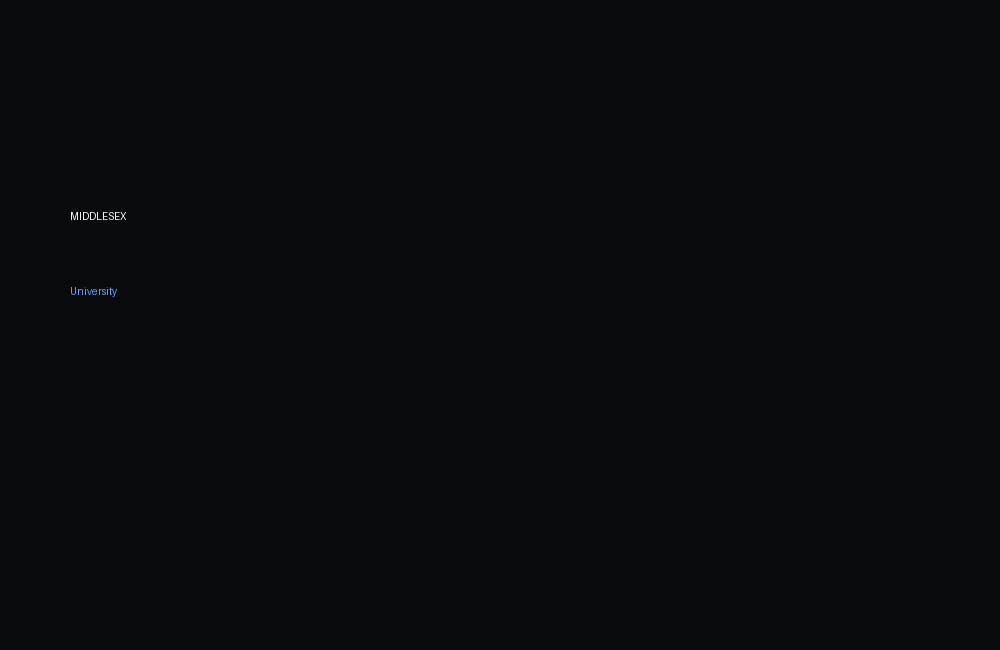
Visit university ↗Middlesex University Dubai · UAE
MIH · MDX Impact Club · Google Development Group on MDX Campus · BSA
LCE Exchange Hindi and Arabic language classes
Customer Experience Management · Digital Technologies · Marketing Theory & Practice · Financial Performance · Global Management · Business Startup · Cross-Cultural Marketing
Marketing · Project Management · Consumer Insights · Digital Technologies · Business Strategy
Additional learning across marketing technology, cybersecurity, cross-cultural communication, business law and entrepreneurship.
I'm interested in opportunities where marketing, technology and innovation come together.
Sofiamarialandini318@gmail.com ↗+971 52 347 1249Dubai, United Arab Emirates